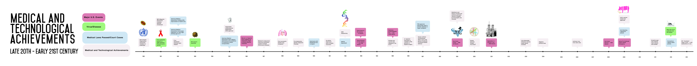

Comparison of National Events to Number of Deaths and Population Increase, 1980-2013
Lansing Cai, Laura Elizabeth Martin, Yeilha Vargas, Gerda Mostonaite
The data presented shows the population and number of deaths in the United States between 1980 and 2013. When placed next to each other one can see that while there is a steady increase in both population and number of deaths, deaths fluctuate more than population. The comparison between the population, the number of deaths, and the timeline explore how advancements in technology, the rise or decline of diseases, influential changes in law, and national catastrophes may have contributed to fluctuation in numbers of death relative to the rather steady population increase.
In most points on the timeline, the number of deaths are only marginally influenced by major events, though they still contribute to the death count. This is evidenced by the 2996 deaths during the terrorist attacks of 2001 that were only 0.12% of the 2,416,425 deaths total for that year. The research reflects that in recent years, no single event can be a major cause of death for that particular year. In the late 19th and early 20th centuries, however, before the development of immunizations, certain years' deaths rates could be pinpointed to one particular event, usually an outbreak of influenza in major urban areas like New York.
